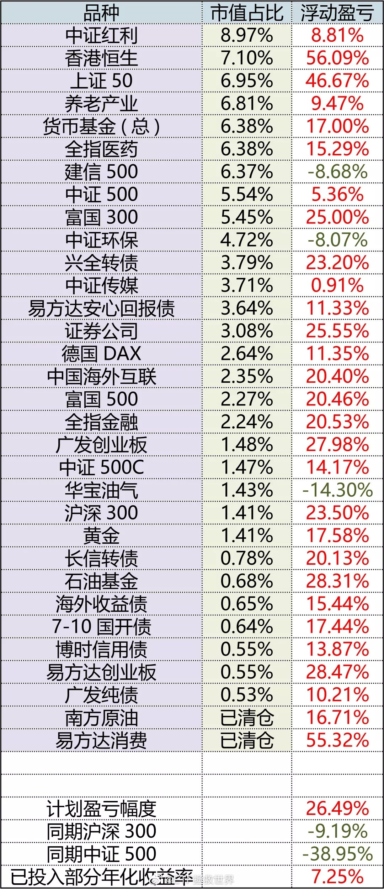

油气。再说一次。长线：150仓位1.43%（有限资金模式）；S仓位5.33%（无限资金模式）。30多个品种几乎唯一亏损的。亏损没事，看看仓位多少。网格：三篇网格文章一再提示做好压力测试。仁至义尽。压力测试做好了，就算跌40%也是意料之中，完全心态平和执行策略。总结一下：长线仓位极低，波段压力测试做好，有些人到底在哭什么。什么？你说你没按照我的长线仓位走？做网格前根本没做压力测试？那你跟我这儿哭什么？关我什么事？你倒说说，我还能做些什么？接管你的账户？